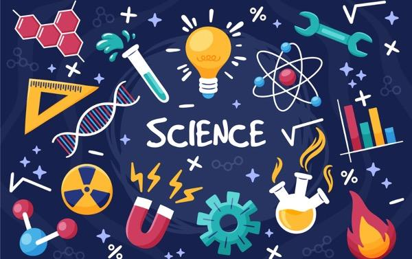

CSS: Internal & Inline
Konsep Ilmu Biologi
Biologi adalah ilmu yang mempelajari kehidupan dan organisme hidup, termasuk struktur, fungsi, pertumbuhan, evolusi, persebaran, dan taksonominya. Ilmu ini sangat luas, mencakup berbagai subdisiplin yang fokus pada aspek-aspek kehidupan tertentu, seperti biokimia, genetika, ekologi, dan fisiologi.
Biologi juga mempelajari interaksi antarorganisme serta hubungan mereka dengan lingkungan. Ilmu ini penting untuk memahami bagaimana kehidupan di Bumi berkembang, bagaimana makhluk hidup beradaptasi, dan bagaimana kita bisa menjaga keseimbangan ekosistem yang kompleks.
